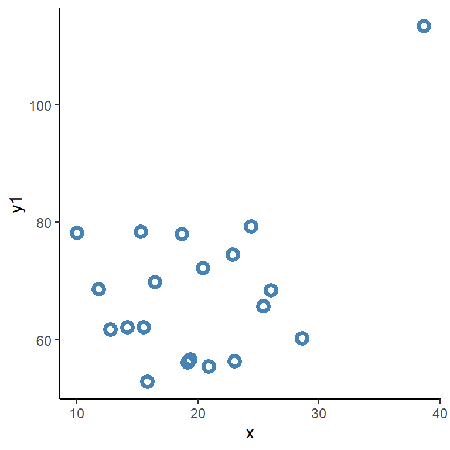

4 Statistiske metoder for samvariasjon i Jamovi
4.1 Regresjon i Jamovi
Vi starter med datasettet egg_kolesterol_1_2_3.csv. Når du laster inn datasettet i Jamovi bør du kontrollere at variablene, egg og kolesterol er formatert som forventet. Bruk Edit under Variables for å forandre Measure type hvis du trenger det. For å lage en regresjonsmodell i Jamovi går vi inn i modulen Regression og velger Linear regression. Her velger vi dependent variable (avhengig variabel). Slik vi formulerer hypotesen om forholdet mellom egg og kolesterol tror vi at antall egg påvirker kolesterolet. Kolesterol er derfor vår avhengige variabel.
Jamovi gjør et skille mellom covariates og factors. Disse er begge uavhengige variabler men covariates krever kontinuerlig data og factors håndterer data som ordinal/nominal data. Vi setter inn egg som en kontinuerlig covariate.
’
Når variablene er lagt inn får vi to tabeller i resultatfeltet. Model fit Measures sier noe om styrken i sammenhengen mellom variablene. R tilsvarer korrelasjonskoeffisienten (se under) når modellen inneholder en uavhengig variabel.
I tabellen Model Coefficients - kolesterol se vi skjæringspunkt (Intercept) og stigningstall egg under Predictor. Under Estimate ser vi de estimat som modellen lager. 3.94 er gjennomsnittlig kolesterolnivå når eggkonsumpsjon er 0, for hvert egg så stiger kolesterolet med 0.86 enheter. For hvert estimat finner vi et standardfeil (SE), t-verdi (t) og p-verdi. Disse bruker vi får å trekke konklusjoner om populasjonen dataene kommer ifra. Tallene er koblet til forskjellige mål på usikkerhet, noe vi skal snakke mer om senere.
Oppgave: Tolking av regresjonskoeffisienter
A: I eksemplet over finner vi at skjæringspunktet er 3.94 enheter og stigningstallet er 0.86 enheter. Beregne det forventede kolesterolnivået for pasienter som spiser 1, 6 og 12 egg per uke.
B: Lag en ny variabel i Jamovi som beregner kolesterolnivået ved hjelp av antallet rapporterte egg for hver observasjon i datasettet.
Svar: Tolking av regresjonskoeffisienter
A: Vi kan bruke ligningen for regresjonsmodellen for å beregne kolesterol for et gitt antall egg: \(= 3.94 + 0.86\times\text{egg}\). Stigningstallet gir oss forandringen i kolesterol for hver forandring i ukentlige egg.
B: Under Variables legger vi til en variabel (Add/Computed variable) og i formelfeltet kan vi bruke ligningen direkte 3.94 + 0.86 * egg.
I modulmenyen finner vi Assumption checks. Her finnes flere alternativer for å sjekke antagelser om modellen. Her foreslår vi at man først fokuserer på Q-Q plot of residuals. Denne figuren viser hvor godt residualene følger en normalfordeling. Hvis punktene er nærme den rette linjen så følger vi normalfordelingen og vi kan sies ha støtte for antagelsen om at residualene er normalfordelte. Residual plots gir oss en indikasjon på hvor spredning av feilleddet er fordelt over datamaterialet og prediksjoner fra modellen . I figuren som viser Fitted vs. Residuals ønsker vi å se at vi har like mye feil over alle predikerte tall. Muligens ser vi en tendens til mer spredning i kolesterol ved større predikerte verdier.
Oppgave: Hvordan lage en residualplot?
Du beregnet tidligere en ny variabel med predikerte tall for hvert observasjon. Denne kan vi bruke for å beregne en ny variabel som vi kan kalle for feilledd. Feilleddet bergenes som differensen mellom predikerte og observerte verdier.
Bruk variablene i en scatter-plot (Analyses/Exploration/Scatterplot) og sammenlign resultatet med Residual plots under Assumptions Checks.
Svar: Hvordan lage en residualplot?
Vi bruker ligningen for regresjonsmodellen for å beregne kolesterol for et gitt antall egg: \(= 3.94 + 0.86\times\text{egg}\), denne informasjonen kan gå inn i en variabelen som vi navngir “pred”. Vi lager så en ytterligere variabel (“feilledd”) som kolesterol-pred. Du bør nå ha den samme visuelle informasjonen din scatter-plot og i den første av figurene Residual plots.
Et alternativ i Regression modulen er å bruke Save fanen for å spare Predicted values og Residuals.
Begge disse to grafiske metodene (Q-Q plot og Residual plots) bør brukes ved regresjonsanalyse da de sier noe om hvor godt modellen representerer dataene. Med små datasett kreves det store brudd mot antagelser for at vi skal finne dem. Den figur du skapte selv i oppgaven over et godt utgangspunkt for å bedre forstå også mer komplekse modeller med flere uavhengige variabler.
Under modulmenyen Estimated Marginal Means finner vi en mulighet for å lage en grafisk representasjon av modellen når vi legger inn prediktoren under Marginal Means. Velger vi også Marginal means table får vi det estimerte kolesterolnivået ved gjennomsnittet (\(\mu\)) i variabelen egg pluss og minus et standardavvik.
4.1.1 Regresjon og korrelasjon
Som vi allerede notert gir regresjonsmodellen oss en måte å beskrive forholdet mellom en avhengig variabel og en (eller flere) uavhengige variabler. En forenkling av sammenhengen mellom to variabler er en korrelasjonsanalyse. I motsetning til regresjonsmodellen så gjør ikke korrelasjonen forskjell mellom avhengig og uavhengig variabel.
En regresjonsanalyse kan gjøres i Jamovi i modulen Regression hvor vi velger Correlation matrix.
Oppgave: Regresjon og korrelasjon
A: Bruk Correlation Matrix for å beregne Pearson Correlation Coefficient på dataene i egg_kolesterol_1_2_3.csv. Lag også en regresjonsmodell av det samme forholdet. Hva er er korrelasjonskoeffisienten i Correlation Matrix resultatene respektive under Model Fit Measures i resultatene fra regresjonsmodellen?
Svar: Regresjon og korrelasjon
A: Disse tallene resulterer fra den samme analysen, de gir oss korrelasjonskoeffisienten. Vi kan lese korrelasjonskoeffisienten som spredningen kring regresjonsmodellens rette linje. Vi kan også lese den som stigningen i y når vi øker x med 1 enhet når begge variabler har blitt sentrerte (trekker fra gjennomsnittet fra hvert tall) og delt med standardavviket. Du kan undersøke dette ved å skape to nye variabler ved hjelp av funksjonen SCALE. Regresjonen SCALE(kolesterol) = SCALE(egg) gir oss korrelasjonskoeffisienten som et stigningstall.
Under Correlation Matrix har vi også mulighet å lage en graf over sammenhengen mellom variablene. Denne grafen kalles vanligvis for scatter-plot. I denne versjonen er finner vi en scatter-plot i den nedre venstre kvadraten i en figur som “krysstabulerer” variablene. På diagonalen finner vi fordelingen av hvert variabel og over diagonalen finner vi korrelasjonskoeffisienten (Figur 4.1).
En korrelasjonsanalyse kan lett påvirkes av datapunkter som avviker fra en normalfordelt variabel. I figuren under ser vi et eksempel på hvor et ekstremt datapunkt driver en korrelasjon (Figur 4.2). Du finner datasettet her (korr_ekstrem.csv). I en slik situasjon kan vi med hjelp av en enkel figur (scatter-plot) se at en observasjon skiller seg fra de andre og sannsynligvis påvirker utfallet av en analyse av samvariasjon. Her finnes noen grep vi kan ta, hvis vi ønsker å rapportere korrelasjonen mellom variablene når de uttrykkes på den naturlige skalaen kan vi lage en versjon av analysen som inkluderer punktet og en som ikke gjør det og rapportere begge. Konklusjonen vi får er at en observasjon gir oss samvariasjonen og vi har dermed ikke sterke beviser for at de faktisk er en samvarisjon mellom variablene.
En annen strategi er å uttrykke variablene som rangerte. De laveste tallet i hver variabel får verdien 1, neste tall får verdien 2, osv. Hvis vi lager en korrelasjon på disse transformerte variablene tar vi vekk effekten av at noen er ekstreme og derfor påvirker analysene. Denne strategien er et eksempel på en ikke-parametrisk analyse da vi ikke har noen antagelser om hvordan variablene fordeles. En ikke-parametrisk korrelasjonskoeffisient kalles ofte for Spearman’s korrelasjonskoeffisient. Denne bruker vi når ser at antagelse om normalfordelt data og lineært forhold mellom variablene holder. I oppgaven under undersøker vi hvordan denne koeffisienten beregnes.
Oppgave: Regresjon og rank
A: Bruk Correlation Matrix for og datasettet (korr_ekstrem.csv) for å beregn korrelasjonskoeffisienten (Pearsons) for variablene x og y1. Lag så to ny variabler ved hjelp av funksjunen RANK (=RANK(x) og =RANK(Y)), undersøk variablene for å forstå hva transformasjonen gjør med de. Beregn så korrelasjonen mellom =RANK(x) og =RANK(Y) ved hjelp av Pearsons korrlasjonskoeffisient og korrlasjonen mellom x og y1 ved hjelp av Spearmans korrelasjonskoeffisient
B: I datasettet finner vi ytterligere en variabel. Hva er forskjellen mellom Pearson og Spearmans korrelasjonskoeffisient når du bruker variablene x og y2. Lag en scatter-plot av forholdet mellom disse variablene og forklar hvorfor du får de resultat du får.
Svar: Regresjon og rank
A: En korrelasjon beskrevet med Pearsons koeffisient gir oss 0.46 på dataene som ikke er transformert. Når vi bruker funksjonen rank får vi 0.03, dette er det samme tallet vi får når vi bruker Spearmans korrelasjonskoeffisient på ikke-transformert data. Spearmans korrelasjon gir oss alltså koeffisienten for korrelasjonen på rangerte data.
B: Her får vi 0.97, respektive 0.95 ved bruk av Pearsons og Spearmans korrelasjonskoeffisient. Variablene følger et lineært forhold gjennom hele datamengden og det avvikende datapunktet påvirker derfor ikke forholdet. Den rangerte variabelen skiller seg ikke heller fra variabelen uttrykt på orginalskala.
4.1.2 Multippel regresjon med Jamovi
I datasettet fotball_1_2_3.csv kan vi stille spørsmål til hvordan årsinntekt påvirkes av spillerbors karakter gitt at ser denne sammenhengen er betinget opprinnelse og posisjon. Med betinget for mener vi at vi kontrollerer for disse effektene når vi undersøker sammenhengen mellom variablene som interesserer oss.
Modellen kan representeres som:
\[\text{årsinntekt} = \beta_0 + \beta_1\times\text{spillerbørs} + \beta_2\times\text{opprinnelse} +\beta_3\times\text{posisjon}\] Variabelen opprinnelse har to nivåer, Norsk og Utenlandsk. I modellen vil denne variabelen bli lagt til som en dummy-variabel hvor Norsk er referansenivået. Den estimerte koeffisienten \(\beta_2\) vil “aktiveres” når dummy-variabelen settes til 1, det vil si, når vi observerer en utenlandsk spiller. Koeffisienten gir oss altså gjennomsnittlig forskjell i årsinntekt mellom Norsk og Utenlandsk opprinnelse.
Variablene posisjon har fire nivåer, angrep (referansenivå), forsvar, keeper og midtbane. I regresjonsmodellen vil disse bli representert med tre dummyvariabler. Vi vil ikke se disse annet en som sammenligninger med referansenivået (angrep). I tabellen under ser du hvor dummyvariablene konstrueres for observasjoner i de forskjellige posisjonene
| Posisjon | Dummy forsvar | Dummy keeper | Dummy midtbane |
|---|---|---|---|
| Angrep | 0 | 0 | 0 |
| Forsvar | 1 | 0 | 0 |
| Keeper | 0 | 1 | 0 |
| Midtbane | 0 | 0 | 1 |
Når modellen beregner gjennomsnitt for angrep settes alle dummyvariablene til 0. Når modellen representerer en gjennomsnittlig forsvarsspiller settes dummyvariablene forsvar til 1 og koeffisienten for forsvar “aktiveres”. Koeffisientene for de forskjellige posisjonene sammenlignes med referansenivået angrep.
Før vi lager modellen i Jamovi kontrollerer vi datatyper i datafanen, spillerbørs kan endres til en kontinuerlig variabel, opprinnelse er en nominal variabel, men Norsk er referansenivå, indikert ved at vi finner denne i toppen av levels. Likeså er angrep referansenivået i den nominale variabelen posisjon. årsinntekt er en kontinuerlig variabel, vi beholder den slik for nå.
I bakgrunnen har vi altså følgende modell:
\[\text{årsinntekt} = \beta_0 + \beta_1 x_\text{spillerbørs} + \beta_2 x_\text{Utenlandsk} +\beta_3 x_\text{forsvar} + \beta_4 x_\text{keeper} +\beta_5 x_\text{midtbane}\]
Vi lager modellen ved å sette årsinntekt som avhengig variabel (Dependent variable), spillerbørs i Covariates, posisjon og opprinnelse i Factors. Før vi ser på estimatene ser vi på antagelser under Assumption checks. Den resulterende figuren Q-Q Plot ser ikke lovende ut, den indikerer at residualene ikke følger en normalfordeling, noe vi antar at de gjør. Residuals vs. Fitted indikerer at spredningen i feilleddet er større ved større predikerte tall. Modellen har mer feil når de predikerte inntektene er større.
Det finnes noen grep man kan ta for å lage en modell som til større grad følger de antagelser vi setter opp. Et vanlig grep er å log-transformere den avhengige variabelen. Dette kan gi oss data som passer bedre i en ordinær lineær regresjonsmodell. Log-transformering innebærer at vi tar logaritmen av den originale variabelen, dette betyr at istedenfor å se på dataene på lineær skala ser på dem på en multiplikativ skala. Resultatene fra modellen vil da fortelle oss om en relativ forandring i den avhengige variabelen istedenfor absolutt forandring. Hvorfor?
Vi kan starte med å se på noen regler for logaritmer. Multiplikasjon på naturlig skala gir addisjon på log-skala:
\[log(xy)= log(x) + log(y)\] Subtraksjon på log-skala gir oss ratio på naturlig skala
\[log(x/y) = log(x) - log(y)\] Et tall som vi finner på log-skala kan transformeres tilbake til naturlig skala ved å bruke eksponentialfunksjonen \(e\) (vanligvis bruker vi naturlige logaritmer).
\[e^{log(y)} = y\] I en enkel regresjonsmodell finner vi fra et stigningstall forandring i \(y\) basert på en enhets forandring i \(x\). På naturlig skala er forandring absolutt og en differens \(y_{x=1} - y_{x=0}\) (differensen mellom \(y\) når \(x\) er lik 0 og \(y\) når \(x\) er 1). Når vi har den avhengige variabelen på log-skala gir modellen oss fortsatt differensen, men vid transformering til naturlig skala har vi et ratio
\[log(y_{x=1}) - log(y_{x=0}) = log(\frac{y_{x=1}}{y_{x=0}})\] Når et stigningstall i en modell med en log-transformerte avhengig variabel er for eksempel 0.2 enheter gir dette at vi ser en økning med 1.22 ganger for hvert økning i den uavhengige variabelen:
\[e^{0.2} = 1.22\] Vi kan beregne denne som en prosentdel økning ved \(100 \times (e^{0.2} - 1) = 22\%\). Vi kan lese dette resultatet som at hvor enn vi starter i vår avhengige variabel så estimerer modellen 22% økning i den avhengige variabelen for hvert enhets økning i uavhengig variabel. Dette er en relativ økning som i absolutte tall er forskjellig hvis vi starter med 10 (\(10\times 0.22=2.2\)) eller 1000 (\(1000 \times 0.22 = 220\)).
For å transformere en variabel i Jamovi legger vi til en transformering. Gå til datafanen, marker årsinntekt og trykk på transform. Under using transform skaper vi en ny transformering (Create new transform), og legger inn =LN(\$source) i formelfeltet. I formelfeltet står $source for variabelen som skal brukes i transformeringen, LN er funksjonen for den naturlige logaritmen. Vi kan navngi den nye transformering til “LOG”. En ny variabel skapes med en bestemt Source variable og vår definerte transform (using transform).
Vi bytter den tidligere variabelen med vår nye log-transformerte variabel og ser igjen på Assumption checks. Dette ser bedre ut, residualene er nærmere normalfordelt (Q-Q Plot) og spredningen i residual-figuren spreder likt over hele datamaterialet. Vi kan nå tolke resultatene.
Oppgave: Tolkning av en multippel regresjonsanalyse.
A: Med hvor mye stiger årsinntekt for hvert enhet økning i spillerbørs?
B: Beregn årsinntekt for en angrepsspiller med norsk opprinnelse og verdien 3 på spillerbørs.
C: Beregn årsinntekt for en forsvarsspiller med utenlandsk opprinnelse og verdien 4.78 på spillerbørs.
Svar: Tolkning av en multippel regresjonsanalyse
A: For hvert enhet økning i spillerbørs stiger årsinntekt med 0.33 enheter på log-skala. Dette tilsvarer 39% økning. Vi kan bruke Jamovi som kalkulator å legge inn en ny transform: =100 * (EXP(\$SOURCE) - 1). Ved å skape en ny variabel kan vi legge inn resultatet vi er interessert i å transformere og finner økningen i prosent.
Alternativt finnes funksjonen for eksponentialfunksjonen i excel. Her bruker vi =EKSP(0,33) for å beregne \(e\) opphøyd i 0.33 som gir stigningstallet fra modellen på naturlig skala.
B: Vi bruker ligningen for regresjonsmodellen for å beregne årsinntekt for en angreps-spiller med norsk opprinnelse og verdien 3 på spillerbørs. Modellen sier:
\[\operatorname{log}(\text{årsinntekt}) = \beta_0 + \beta_{\text{spillerbørs}}\times3\] Da vi er interesserte i referansenivået for opprinnelse og posisjon faller begge ut fra ligningen. Dette gir
11.78 + 0.33 * 3 = 12.77
Tallet er på log-skalaen, noe som gir oss EXP(12.77) = 351512 på den naturlige skalaen.
C: Vi bruker ligningen for regresjonsmodellen for å beregne årsinntekt en forsvarsspiller med utenlandsk opprinnelse og verdien 4.78 på spillerbørs. Modellen sier:
\[\operatorname{log}(\text{årsinntekt}) = \beta_0 + \beta_{\text{spillerbørs}}\times4.78 + \beta_{\text{forsvar}}\times1 + \beta_{\text{utenlandsk}}\times1\]
Her kan vi sette sammen verdiene fra modellen
11.78 + 0.33 * 4.78 + 0.04 + 0.3 = 13.7
Noe som gir 888597 NOK i estimert årslønn. Merk at den estimerte årsinntekten også kan beregnes i fanen Estimated Marginal Means ved å sette inn alle uavhengige variabler under Marginal Means. Dette vil gi en tabell over alle kombinasjoner av variablene sammen med et gjennomsnitt (Marginal Mean). Det å beregne Marginal Means i Jamovi gir oss også en figur som illustrerer effektene. Utenlandske spillere har noe høyere årsinntekt sammenlignet med norske spillere, forsvar og angrep gir også høyere lønn samtidig som en økt verdi på spillerbørs gir høyere lønn.
4.2 Gruppesammenligninger og regresjonsanalyse
En familie med statistiske teknikker som vi ikke snakket om enda er t-tester. Dette er litt rart med tanke på at disse teknikkene er blant de mest brukte og rapporterte statistiske “testene” innad flere vitenskapelige felt. Vi velger denne måten å presentere teknikker for samvariasjon da vi kan gjenskape resultatene fra for eksempel en t-test i en regresjonsanalyse1.
1 I stort sett alle de mest vanlige statistiske teknikkene kan uttrykkes som variasjoner av en regresjonsmodell. Kjenner vi regresjonsmodellen og kan bruke den står vi friere til å formulere statistiske analyser etter behov. Se lindeloev.github.io/tests-as-linear/ for en oversikt.
t-testen finnes i tre forskjellige varianter: Den uavhengige t-testen, den avhengige t-testen og “one-sample” t-testen. Den uavhengige t-testen måler samvariasjon mellom en kategorisk variabel (uavhengig variabel) og en kontinuerlig variabel (avhengig variabel) når dataene i de to kategoriene uavhengige av hverandre. En avhengig t-test måler samvariasjon mellom en kategorisk variabel (uavhengig variabel) og en kontinuerlig variabel (avhengig variabel) når dataene i de to kategoriene avhengige av hverandre. Her er det altså to konsepter som beskrives som avhengig/uavhengig noe som kan lage forvirring. Når data i de to kategoriene er avhengige (dependent) sier det noe om at det finnes “slektskap” mellom datapunktene. For eksempel kan vi måle den samme variabelen i en gruppe individer etter to forskjellige intervensjoner. I en uavhengig analyse har vi isteden antagelsen at dataene ikke kommer fra den samme “statistiske enheten” (som f.eks. forsøkspersoner).
For å illustrerer slektskapen mellom t-testen og regresjonsmodellen starter vi med datasettet fotball_1_2_3.csv. Her finner vi variablene årsinntekt og opprinnelse. årsinntekt er en kontinuerlig variabel og opprinnelse er en kategorisk variabel med to nivåer. Disse dataene passer modellen
\[\text{årsinntekt} = \beta_0 + \beta_1 x_{\text{opprinnelse = utenlandsk}}\] Vi starter med å lage analysen som en regresjonsanalyse i Jamovi ved å sette årsinntekt som avhengig variabel og opprinnelse som uavhengig variabel under Factors. Estimatet for forskjellen mellom gruppene er 112 447 NOK, denne forskjellen henger sammen med en standardfeil (SE) på 99 942 NOK, en t-verdi på 1.13 og p-verdi på 0.262.
Under modulen T-Tests kan vi velge Independent Samples T-Test og sette in årsinntekt som avhengig variabel og òpprinnelse som Grouping Variable. Du vill finne de samme resultatene i resultatfanen hvor Statistic tilsvarer t-verdien for \(\beta_1\) koeffisienten i vår regresjonsmodell over. Legg merke til at du kan velge at resultatene skal inneholde beskrivende statistikk for gjennomsnittlig forskjell og Assumption Checks noe som gir mye av den samme informasjonen som du kan få fra en regresjonsanalyse.
Vi vet allerede mye analysen over, for eksempel at årsinntekt også varierer sammen med spillerposisjon. t-testen er ikke mulig å utvide for å inkludere flere variabler, noe som kan gi svar på hvordan effekten av opprinnelse ser ut når vi tar hensyn til at spillerposisjon kan være skjevt fordelt mellom norske og utenlandske spillere.
4.2.1 En avhengig t-test
Som nevnt over er antagelsen om dataene i en avhengig t-test at de er avhengige eller korrelerte mellom for eksempel repeterte målinger. Slike data kan vi få fra et forsøk hvor vi måler VO2maks på deltakere for og etter en intervensjon. Simulerte data fra en slik intervensjon finnes i datasettet vo2maks.csv.
I en enkel regresjonsmodell kanskje vi ønsker å estimere
\[\text{VO}_{2\text{maks}} = \beta_0 + \beta1 x_{test = 2}\] For å lage en rettferdig bilde av denne modellformuleringen kreves en mer avansert statistisk modell av typen Mixed Linear Model, noe som vi ikke går videre inn på her. Isteden har vi flere andre alternativer og vi starter med å gjennomføre den avhengige t-testen.
Last ned dataene (vo2maks.csv) og legg merke til at testdataene er strukturert som to variabler y1 og y2. Hvert rad i datasettet tilsvarer to observasjoner fra hvert individ. For å gjennomføre t-testen velger vi Paired Samples T-test under modulen T-Tests. Variablene y1 og y2 setter vi så inn under Paired variables. Akkurat som med den uavhengige t-testen kan vi for eksempel velge å se på gjennomsnittlig differens (Mean difference) og Assumption checks. Vi noterer at forskjellen mellom y1og y2 tilsvarer en t-verdi på 3.75, gjennomsnittlig forskjell er 1.61 enheter og standardfeilen for denne er 0.43.
I en enkel regresjonsmodell kan vi gjennomføre en analyse av differensen mellom y1 og y2 ved å først beregne differensen for hvert individ. Vi lager en ny variabel (Data/Add/Computed variable) hvor vi beregner =y2 - y1. La oss navngi denne variabelen til diff. Vi har nå muligheten å lage en modell som beskriver
\[\text{VO}_{2\text{maks y2-y1}} = \beta_0\] Altså, en koeffisient som beskriver gjennomsnittet i differensen mellom tidspunktene. For å lage denne modellen med regresjonsmodulen kreves en ny variabel med bare en verdi i. Vi lager en variabel og fyller den med 1 på hver rad (Data/Add/Data variable), gi den nye variabelen navnet x. Nå kan vi sette opp en modell som gir oss en koeffisient for skjæringspunktet ved å sette diff somavhengig variabel og x som uavhengig variabel. Da x bare inneholder 1 så vil modellen ikke gi estimater for denne variabelen, men vi vil få estimater for Intercept (skjæringspunktet). Vi kan nå se at vi får de samme resultatene her som for Paired Samples T-Test.
En annen måte å lage den samme modellen er ved å bruke en tilleggs-modul som heter Linear Models når den er installert. Her kreves at vi installerer denne nye modulen. Under Modules velger vi jamovi library, finner frem gamlj - General Analyses for Linear Models in jamovi og velger INSTALL. I modulen Linear Models velger vi så General Linear Model og legger til variabelen diff som avhengig variabel. Vi får igjen de samme estimatene som ved bruk av t-testen, men denne gangen uten å “lure” programmet til å bare lage en enkel modell for skjæringspunktet.
4.2.2 One-sample t-test
Den analysen som vi gjennomført her over er den samme analysen som kan gøres med en one-sample t-test. Her bruker vi en variabel og “tester” mot en hypotese, som for eksempel sier at variabelen er 0. Den samme hypotesen er den alternative hypotesen vi stiller opp når vi ønsker å analysere differensene innad en gruppe.
4.3 Variansanalyse i Jamovi
Vi kan reprodusere analysen som presenteres i Tabell 3.3 i (Thrane 2020) ved hjelp av datasettet fotball_1_2_3.csv ved å velge ANOVA-modulen i Jamovi, videre velger vi One-way ANOVA. Denne analysen gjennomføres over en kategorisk variabel, derav navnet “en-veis variansanalyse”. Vi setter årsinntekt som avhengig variabel (Dependent variable) og posisjon som uavhengig variabel (Grouping variable). Legg merke til at sorteringen av variabelen skiller seg i din tabell fra boken. For å få den samme sorteringen kan vi endre Levels under Data eller Variables (Edit).
En variansanalyse undersøker om variasjonen i en kontinuerlig variabel mellom grupper (kategorisk variabel) er større enn variasjonen innad gruppene. Denne analysen er tett koblet til et hypotesetest som har en null-hypotese som sier at ingen gruppe skiller seg fra gjennomsnittet. Vi velger derfor å vente med detaljene kring dette til modulen som omhandler Chapter 7.
I analysemodulen for en en-veis variansanalyse finner vi flere mulige valg. Under Variances har vi mulighet å velge om vi skal gjøre antagelse om lik eller ulik varians mellom grupper. Dette er en antagelse om modellen, i den enkleste formen har vi en antagelse om a variansen er lik mellom gruppene. Her er dog en slik antagelse vanskelig å forsvare i mange fall og Welch’s one-way ANOVA å foretrekke. Denne metode for å beregne teststatistikken som blir brukt for å teste hypotesen (gjennomsnitt i gruppen skiller seg i fra hverandre), er mer robust. Vi risikerer til mindre grad å bli lurt av hypotesetesten (mer om dette i Chapter 7).
Under Missing values velger vi hvordan vi håndterer observasjoner hvor vi savner data. Under Assumption Checks kan vi la Jamovi gjennomføre noen test for de antagelser som følger med analysen. Homogeneity test tester om variansen er lik mellom grupper, hvis den ikke er det, er som nevnt Welch’s test et test som tar høyde for dette. Som i regresjonsanalysen kan vi se på en Q-Q plot som viser hvor nærme feilleddet (residualene) ligger en normalfordeling.
Under Additional Statistics finner vi muligheten å faktisk finne gjennomsnitt per gruppe. Her kan vi reprodusere Tabell 3.3 (Thrane 2020).
4.4 Krysstabulering i Jamovi
Vi kan gjenskape Tabell 3.5 i (Thrane 2020) ved å åpne datasettet student_trening_1_2_3.csv i jamovi. Under modulen Frequencies finner vi Independet samples, \(\chi^2\) test of association. Vi velger å sette kjønn i *Rows** og idrettslag i Columns. Under Cells kan vi velge å sette opp observerte antall under Observed counts og prosentandeler per rad, kolonne eller totalt under Percentages. Jamovi kan også gi deg informative figurer fra analysene som baserer seg på krysstabulering under Plots.
Thrane, Christer. 2020. Statistisk Dataanalyse På 1-2-3. Cappelen Damm.
Under Statistics finner vi flere alternativer for hypotesetesting under Testes og Hypothesis. Mer relevant for denne modulen er Comparative Measures, disse forteller om samvariasjonen mellom, i dette fallet, kjønn og medlemskap i idrettslag. Vi har tidligere beregnet Odds ratio og Log odds ratio, her finner vi også Relative Risk og Difference in proportions. Forskjellen mellom gruppene i prosentpoeng (Difference in proportions) er hva Thrane (2020) rapporterer som mål på samvariasjon mellom variablene (s. 55). Relative Risk kan beregnes som forhold mellom “risk” for å medlemskap i et idrettslag (\(\text{IL}\)) hos kvinner og hos menn hvor risk er \(\text{IL}_{\text{ja}} / \text{IL}_{\text{ja}} + \text{IL}_{\text{nei}}\). Vi kan lese den relative risken som at kvinner har en risk for å være med i et idrettslag som er 0.41 ganger risken for menn. Vi snakker vanligvis ikke om “risk” i slike sammenhenger.
4.5 Fra krysstabulering til Logistisk regresjon
En logistisk regresjonsmodell forteller oss om sammenhengen mellom en avhengig variabel og en eller flere uavhengige variabler uttrykket som en log-oddsforhold (log-odds ratio, OR). Vi kan bruke modulen Regression til å tilpasse en logistisk regresjonsmodell som beskriver sammenhengen mellom kjønn og medlemskap i idrettslag, her velger vi 2 Outcomes, Binomial og setter inn variablene under Dependent Variable og Factors. Likt som under Linear Regression har vi mulighet å bygge opp en modell med hjelp av flere variabler, kategoriske og kontinuerlige.
Oppgave: Logistisk regresjon
A: Vi misstenker at variablene timer_tren og trener_mest også er av betydning for sannsynligheten for å være medlem i et idrettslag (data i student_trening_1_2_3.csv). Det kan også være sånn at vi sammenligner to delvis forskjellige grupper når vi sammenligner menn og kvinner. For å gjøre sammenligningen mellom menn og kvinner mer korrekt ønsker vi å kontrollere for timer_tren og trener_mest. Lag en modell som beskriver sammenhengen mellom kjønn og idrettslag, og samtidig kontrollerer for variablene timer_tren og trener_mest.
Når du gjør sammenligninger ønsker vi å vite sannsynligheter for medlemskap i et idrettslag. Lag derfor en ny variabel ved bruk av funksjonen =IF. Denne funksjonen tar som argumenter en logisk test, verdien når SANN og verdi når IKKE SANN. Når vi skriver “testen” som idrettslag == "ja" vill det gi oss SANN når vi har en rad i datasettet hvor variabelen idrettslag er lik “ja”. Vi setter verdien på vår nye variabel til 1 i disse fallene og 0 når så ikke er tilfelle. Hele uttrykke blir =IF(idrettslag == "ja", 1, 0). Vi har nå kontrollert at variabelen faktisk beskriver hva vi tror den beskriver.
Hvordan tolker du sammenhengen mellom kjønn og medlemskap i et idrettslag?
Svar: Logistisk regresjon
I en modell hvor vi bare har kjønn som uavhengig variabel sier resultatene at forholdet mellom menn og kvinner i oddsen for å være medlem i et idrettslag er 3.21. Dette kan også sies bety at menn er 3.21 ganger mer sannsynligt medlemmer i et idrettslag sammenlignet med kvinner. Når vi tar sammenligner menn og kvinner samtidig som vi tar høyde for antall treningstimer og hva man trener mest er det samme forholdet 2.98. Det vill si at effekten er noe svakere når vi praksis sammenligner menn med kvinner som trener det samme og like mye.
I denne analysen er vi ikke direkte interesserte i de samvariasjon mellom andre variablene og medlemskap. Vi bruker de for å “balansere” gruppene menn og kvinner sånn at vi sammenligner menn og kvinner med samme verdier på de andre variablene.
Odds-ratioen får vi frem ved å bruke eksponentialfunksjonen (=EXP() i Jamovi, =EKSP() i Excel, eller \(2.718282^\beta\) på en kalkulator hvor \(\beta\) er koeffisienten fra modellen). Odds-ratioen er altså forholdet mellom odds for medlemskap hos menn og odds for medlemskap hos kvinner.